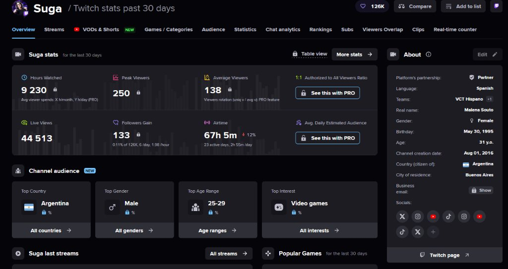
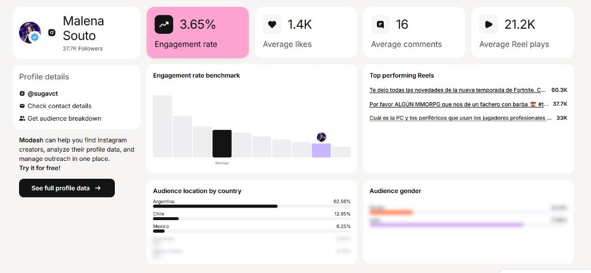

CABRALES FOCUS
"Precisión que se toma"

El Conflicto de la Atención & El Ritual del Foco

Influencer Marketing: Colaboración con Suga (@sugavct)

Suga (Malena Souto)
Partner Twitch ✓ Team: VCT Hispano Twitch: 126K IG: 37.7K · 3.65% ER (Modash) Auditorías Streams Charts & Modash| Dimensión | Audiencia de Suga (Twitch & Instagram) | Target Focus / Persona Bruno Díaz | Calce Estratégico |
|---|---|---|---|
| Ubicación Geográfica | Twitch: Top #1 Argentina · Instagram: 62.56% Argentina (Modash) | CABA / Gran Buenos Aires (Sede Dot Baires) | ✓ Match 100% Territorial Validado |
| Rango Etario | Twitch: 25 a 29 años · IG: Audiencia universitaria/adulta | Bruno Díaz: 26 años (Muestra TPO: 73,3% 18-29) | ✓ Match Demográfico 1:1 |
| Afinidad Temática | Team oficial VCT Hispano · Top Reels Hardware y Videojuegos | Gamer competitivo de VALORANT (Shooters tácticos) | ✓ Autoridad eSports & Gaming |
| Engagement y Atención | Twitch: 9.230h vistas · Instagram: 3.65% ER (sobre mediana) | Descubrimiento en feed móvil y directos nocturnos | ✓ Doble Embudo (Alcance + Retención) |
La comunidad de shooters competitivos penaliza fuertemente el patrocinio oportunista. Al ser Suga parte formal de la estructura de VCT Hispano (Riot Games), su recomendación es percibida como una herramienta legítima para no perder concentración, no como un aviso comercial forzado.
9.230 horas vistas en Twitch y 21.2K reproducciones promedio por Reel en Instagram generan un entorno de atención profunda y chat limpio. Durante el stream de 35 min, el proceso de destape, escaneo del código QR bajo la anilla y canje de bonos en Club Focus puede explicarse con claridad didáctica y replicarse en vivo.
Canal activo de forma ininterrumpida desde agosto de 2016 (casi 10 años), estatus de Partner oficial de Twitch y perfil verificado en Instagram. Suga ofrece estabilidad, profesionalismo contractual y una reputación intachable sin controversias, salvaguardando el prestigio histórico de la marca.
Con un engagement rate de 3.65% y más del 62% de su base en Argentina residiendo en Buenos Aires, la invitación lanzada en redes (Placa P3) tiene tracción física inmediata hacia el stand BTL en Saavedra, tal como se dramatiza en la transición narrativa del cortometraje nodriza.
Suga publica en su perfil oficial la invitación formal a la experiencia física en Dot Baires Shopping. Aplica la estructura AIDA (Atención, Interés, Deseo, Acción) interpelando las distracciones del gamer y guiándolo hacia el stand de sampling (escena exacta que descubre Bruno en el cortometraje "Turno de noche").
Transmisión nocturna interactiva. Suga dialoga con sus espectadores sobre la pérdida de concentración y las microdistracciones nocturnas. Abre votaciones en directo en el chat para elegir qué hábitos afectan más su rendimiento e incorpora dilemas reales al Archivo de Ventanas de la app.
Frente a cámara, Suga abre una lata bien fría (chasquido característico "clic-pshh"), muestra el código QR único bajo la anilla metálica, lo escanea en vivo desde su smartphone, acredita 100 puntos y canjea un bono para el sorteo de entradas al FiReMAJOR Buenos Aires 2027, educando a toda la comunidad en la mecánica D2C.


Embudo de Lanzamiento: Secuencia P1 ➔ P2 ➔ P3
Hay días en los que el foco parece estar en otra parte. Bruno todavía no sabe lo que se va a cruzar... ☕🦉
P1 · "Antes de encontrar Focus"
Concepto Dramático: Primera aparición de Cabrales Focus en redes sociales. Muestra a Bruno en su habitación frente a la notebook intentando estudiar; la atención fragmentada lo vence. Cierra la pantalla y se retira; en el encuadre queda visible una lata en otro escritorio. El espectador descubre el producto antes que él.
Hay días en los que el foco parece estar en otra parte. Bruno todavía no sabe lo que se va a cruzar. Descubrí su historia completa en "Turno de noche", en nuestro canal de YouTube. Cabrales Focus. Precisión que se toma. #CabralesFocus #TurnoDeNoche #ColdBrew #PrecisionQueSeToma
/pfp_focus_ig.png)
/1.png)
/2.png)
/3.png)
/4.png)
/5.png)
/6.png)
Deslizá para descubrir cómo combinamos 80 años de maestría cafetera con la ciencia de la L-teanina.
☕ Lata 240 ml · 100% Arábica de Brasil
⚡ Escaneá el QR bajo la anilla y sumate al Club Focus.
P2 · "Conocé Cabrales Focus"
Secuencia Pedagógica: Desglose estructurado del concepto cold brew para desarmar confusiones comunes (no es café caliente con hielo) y educar sobre la sinergia nootrópica entre 80 mg de cafeína y 100 mg de L-teanina.
Un café pensado para acompañar tus partidas y tus horas de estudio o trabajo. Coffee Cold Brew con azúcar y L-teanina, listo para tomar. Deslizá para conocer qué contiene, cómo se elabora y en qué momentos sumarlo a tu rutina. Cabrales Focus. Precisión que se toma. #CabralesFocus #ColdBrew #LTeanina #PrecisionQueSeToma #ClubFocus

La experiencia sigue en Club Focus: conocé la app y acompañame en un stream especial donde mostraré cómo registrar una lata, sumar puntos y canjear tu bono para participar por 2 entradas al FiReMAJOR Buenos Aires 2027.
🎟️ 1 lata = 100 puntos = 1 bono. Consultá la agenda en el enlace del perfil.
P3 · "Entrá a Modo Focus con Suga"
Desglose Metodológico de Copywriting (Fórmula AIDA):
¿Listo para entrar en Modo Focus? Con Suga y Cabrales Focus, te invitamos a descubrir nuestro cold brew en Dot Baires Shopping. La experiencia sigue en Club Focus: conocé la app y acompañá a Suga en un stream donde mostrará cómo registrar una lata, sumar puntos y canjear un bono para participar por dos entradas al FiReMAJOR Buenos Aires 2027. Una lata registrada suma 100 puntos; un bono cuesta 100. Hasta diez bonos por usuario y un ganador de dos entradas. Consultá la agenda de la activación y del stream desde el enlace del perfil. Cabrales Focus. Precisión que se toma. #CabralesFocus #ModoFocus #ClubFocus #DotBaires #Suga #sugavct #VALORANT
Expansión & Engagement: P4, P5 y P6 hacia Club Focus
P4 · "Una pausa con Solange"
Estrategia de Contenido Generado por el Usuario (CGU / UGC): Encuentro callejero casual de 30 segundos donde Solange comparte su rutina laboral/académica nocturna con la lata. Convoca a la comunidad a subir su propio ritual con el hashtag #MiVentanaFocus.
Una pausa, un café frío y una charla antes de seguir. ¿En qué momento del día hacés tu pausa? Contanos o compartí tu escena con #MiVentanaFocus. Descubrí a Solange en Historias Focus. Compartir historias no requiere compra ni puntos; reutilizamos aportes solo con autorización y crédito. Convocatoria para mayores de 18 años. Cabrales Focus. Precisión que se toma. #MiVentanaFocus #CabralesFocus #HistoriasFocus #PausaActiva
P5 · "Una última bala: FiReMAJOR 2027"
Anclaje en la Realidad Competitiva (RTM): Reacciona al cierre del FiReSPORTS Last Chance disputado en Buenos Aires (29/10 al 01/11/2026) y capitaliza la conversación hacia el evento histórico confirmado para el país: el FiReMAJOR Buenos Aires 2027 (31/05 al 20/06/2027).
Buenos Aires vivió la tensión de la última bala. En 2027, el Major llega a casa. Cabrales Focus × FiReSPORTS: una colaboración propuesta para acercarte a la tribuna del FiReMAJOR Buenos Aires 2027. Comprá una lata, descargá Club Focus, registrate y escaneá su código único. Sumá puntos y canjealos por bonos de participación. Cada lata suma 100 puntos y cada bono cuesta 100. Podés canjear hasta diez bonos por usuario; un ganador recibe dos entradas. Consultá tus participaciones en Mi Club. Precisión que se toma. #CabralesFocus #FiReMAJOR2027 #CS2 #EsportsArgentina #ClubFocus

P6 · "Tu momento Focus (Interactivo)"
Secuencia de Escucha Activa: Diseñada para relevar hábitos de concentración de la comunidad mediante stickers nativos de Instagram:


Cada partida y cada tarea empiezan de una forma distinta. Elegí, contá y descubrí otras historias. Solo publicaremos aportes con autorización en nuestro Archivo de Ventanas. Cabrales Focus. Precisión que se toma. #TuMomentoFocus #ModoFocus #CabralesFocus #StoriesFocus
Doble Embudo de Captación hacia Club Focus
Convocatoria #MiVentanaFocus y encuestas de distracciones derivan al Archivo de Ventanas y al relato escrito de Solange en la app (100% libre, sin barrera de compra).
CLUBFOCUS
Compra de latas y escaneo de códigos QR únicos bajo la anilla acumulan puntos en la app para canjear por bonos para el FiReMAJOR 2027 y descuentos en eShop.
"Precisión que se toma" El Territorio de Cabrales Focus
Estimados directivos de Cabrales: esta campaña no es un gasto efímero, sino la construcción de un territorio cultural permanente. Conectamos el legado histórico de calidad de Cabrales con el dinamismo del gaming, el relato cinematográfico y una plataforma Direct-to-Consumer propia.
Los invitamos a ponerse en los zapatos del usuario final: respondan la encuesta interactiva en Instagram Stories, elijan qué distracción los afecta y descubran cómo la campaña los conduce fluidamente hacia el relato de Solange en Club Focus.
Agencia Transmedia Focus · Presentación para Directorio de Cabrales S.A.
Taller de Narrativas Digitales (UADE) · Prof. Lic. Carolina Dávila